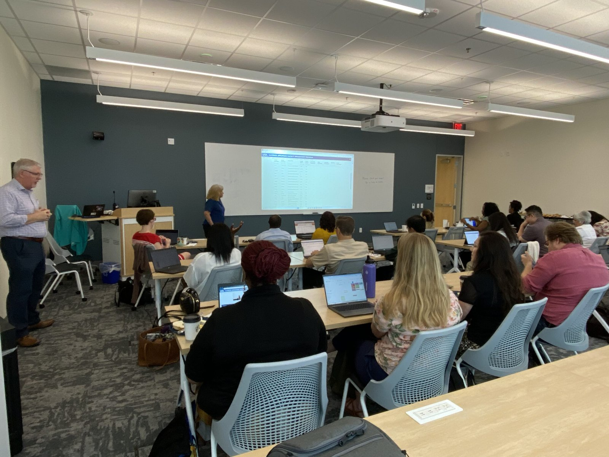

Engineering for One Planet at UTA
A Lemelson Foundation–funded program helping UTA faculty in any discipline weave sustainability into the courses they already teach.
- Completed
- 2024–2026
- Education and workforce
- Sustainability
- Faculty development
- Engineering education

In plain English
Students and instructors increasingly care about sustainability, but many are unsure how to define it or how it fits their field. Engineering for One Planet (EOP), a framework created by The Lemelson Foundation, lists the sustainability learning outcomes every engineering student should gain. With a Lemelson Foundation grant, UTA set out to make that framework part of everyday teaching by training faculty to add sustainability to their existing courses while still meeting each course's core goals.
Starting in fall 2024, the program ran two tracks: a two-day Sustainability High Impact Practices (SHIP) bootcamp, and a two-semester Sustainability Professional Learning Community (SPLC) in which small faculty groups met every two weeks. In the pilot year, more than 30 participants taught over 100 classes reaching an estimated 2,000 students. The shorter bootcamp drew more faculty, so Year 2 (2025–2026) centered on it and opened it to all disciplines. The team also built a brief 15-item student survey to measure sustainability learning across very different courses.
Main points
- In the 2024–25 pilot year, more than 30 faculty participants taught over 100 classes that reached an estimated 2,000 students.
- Faculty preferred the two-day bootcamp's short, project-based format; the two-semester learning community gave deeper engagement but drew fewer people.
- In fall 2025 a 15-item survey collected 246 student responses from about ten courses, and 80.3% of students said their instructor included sustainability content.
- Over 70% of surveyed students said the sustainability material made their course more engaging.
- The program's lessons and survey results were published at the ASEE Annual Conference in 2025 and 2026.
Papers, code and materials
- PaperJones et al. (2025), Teaching teachers to integrate sustainability into engineering education: Lessons learned from UTA's EOP Institutionalization Program, ASEE Annual Conference & Exposition, Montréal
- PaperJones et al. (2026), Piloting a brief, cross-disciplinary survey instrument for measuring sustainability learning outcomes: Year 2 results from UTA's EOP Institutionalization Program, ASEE Annual Conference & Exposition
- RelatedEngineering for One Planet Implementation at UTA (program pages on the SEAR Lab site)
People
- Erick C. Jones Jr., PhD, PEPrincipal Investigator · SEAR Lab directorin
- Kendra Lee WallisCo-author, ASEE 2025 and 2026
- Mengqi Monica ZhanCo-author, ASEE 2025 and 2026
- Na-Li KimCo-author, ASEE 2025
- Ann M.L. CavalloCo-author, ASEE 2025 and 2026
- Andrew ClarkCo-author, ASEE 2025
Profiles marked in link to LinkedIn. More past and present lab members are on the SEAR Lab team page.